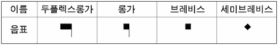
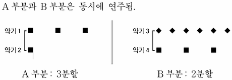

악보의 기호
지문을 먼저 읽고, 이해가 막히는 문단에서 ‘그림으로 보기’를 누르세요. 그림은 문단을 따라 바뀝니다.
1문단음악은 연주를 통해 소리로 표현되는 예술이다. 18세기의 바흐 음악을 현재에도 들을 수 있게 된 것은 음악을 전달하고 보존하는 악보가 있기 때문이다.
2문단오늘날 악보에서 기본적으로 읽어야 할 기호는 음높이를 나타내는 5선과 음자리표, 음길이를 나타내는 음표와 박자표이다. 음높이와 음길이는 음악이 표현해야 하는 본질적인 요소이다.
3문단선은 음높이를 표시하는 실용적인 기호이다. 그런데 9세기경에는 선을 사용하지 않고 가사 위에 간단한 기호로 음들 간의 상대적인 높낮이를 표시했기 때문에 정확한 높낮이는 재현할 수 없었다. 이후 11세기경부터 2선이나 4선 위에 음을 기록했고, 현재 사용하는 5선 악보는 14세기 무렵에 완성되었다. 또한 11세기경부터 사용된 음자리표는 고정된 음높이를 명시하는 기능을 해, 음의 높낮이를 명확하게 재현할 수 있게 되었다.
4문단음길이를 표시하는 기호는 13세기 말 ‘프랑코 기보법’에서 본격적으로 사용되었다. 이 기보법에서는 네 종류의 음길이를 ⓐ정하고, 이를 가장 긴 두플렉스롱가부터 가장 짧은 세미브레비스까지 네 가지의 음표로 표기했다. 이런 길이를 나타내는 음표를 사용하여 음의 장단을 나타내는 리듬의 표현이 다양해졌다. 특히 다성 음악이 발달하기 시작하는 이 시기에는 선율들이 서로 다른 리듬으로 구별되었는데, 여러 가지 음길이의 음표는 이를 표시하는 데 유용했다.

5문단음길이의 표현인 리듬이 일정한 패턴의 강약을 규칙적으로 반복하면 박자가 형성되며, 이를 표기한 것이 박자표이다. 음악의 흐름에는 강과 약의 박이 있다. ‘강-약’, ‘강-약-약’의 박이 규칙적으로 반복될 때 이것을 묶은 것이 각각 2박자, 3박자이다. 이렇게 규칙적인 박의 묶음을 표시하는 박자의 개념은 새로운 리듬 양상을 보여 주는 14세기에 시작되었다. 14세기 이전까지는 그리스도교의 삼위일체를 의미하는 3이라는 수를 ‘완전하다’고 인식했기 때문에 음길이를 셋으로 분할하는 완전 분할을 사용하였는데, 14세기가 되면서 불완전 분할인 2분할도 동등하게 사용되었다. 이러한 ㉠3분할과 2분할은 3박자와 2박자 계통의 기초가 되었다.
6문단이와 같이 음높이는 5선과 음자리표로 정확하게 표시되고 음길이는 음표와 박자표로 다양한 리듬과 규칙적인 박을 보여 주면서, 소리는 악보를 통해 그 의미를 기록하고 전달할 수 있게 되었다.
<보기>는 ‘프랑코 기보법’을 활용하여 ㉠을 표현한 것이다. 이를 이해한 내용으로 적절하지 않은 것은?
